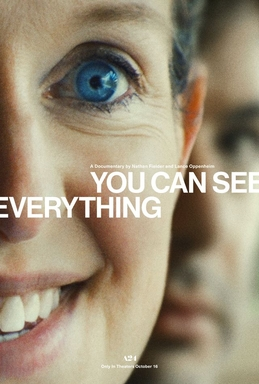
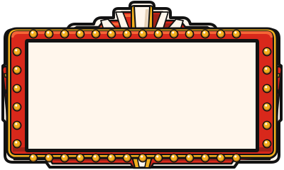
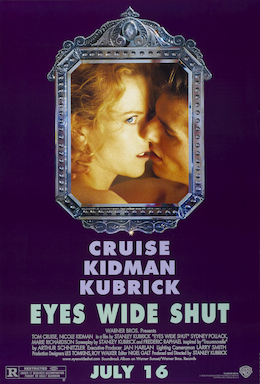
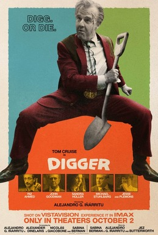

You Can See Everything
2026“Three people compete to see who can be the most manipulative.”


“Three people compete to see who can be the most manipulative.”

“Stanley Kubrick spent 400 days trying to figure out if Nicole and Tom’s marriage was real. He then immediately died and they got a divorce.”

“If Colonel Jessup ordered the Code Red and went to jail, then who ordered all the torturing a couple years later????”

“A man spends a bunch of money on a piece of art to loudly tell us the world is burning while the world burns.2”